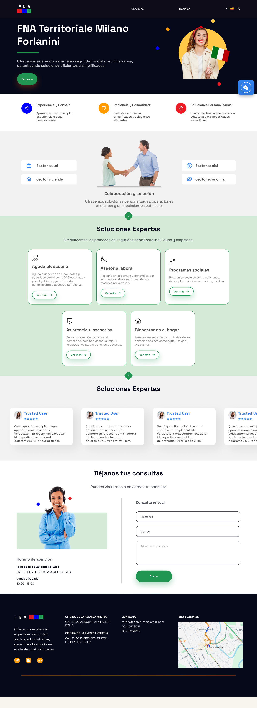
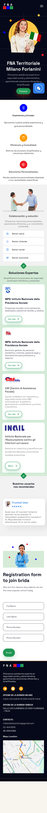
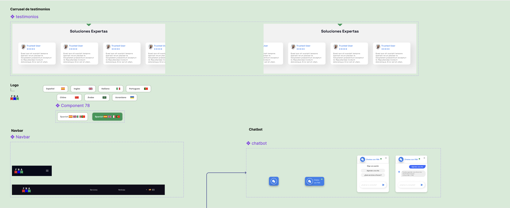

El problema
La plataforma fnamilanoforlanini.com no tenía versión mobile, perdiendo gran parte del tráfico que llegaba desde ese canal. Lideré el rediseño completo de la experiencia, adaptándola a mobile y desktop por primera vez.


Desktop (existente, rediseñada) y mobile (construida desde cero)
UI/UX Designer — diseño de sistema y componentes
Trabajé sola en diseño con un plazo ajustado, cubriendo desde la arquitectura de pantallas hasta la documentación del sistema para que el equipo pudiera escalar sin rehacer cada patrón.
Una librería de componentes, no solo pantallas
Construí un set de componentes reutilizables: selector de idioma con variantes de estado, navbar responsive (mobile/desktop), widget de chat y carrusel de testimonios — documentando estilos, paleta y tipografía. Prioricé primero los componentes de mayor reúso, dado el plazo ajustado del proyecto.

Componentes reales documentados en Figma: selector de idioma (con variante de estado), navbar, chatbot, carrusel de testimonios
Plazo ajustado, equipo de una sola persona
Sin equipo de diseño adicional ni tiempo para explorar múltiples direcciones visuales, prioricé sistematizar primero los patrones que se repetían más veces en el sitio (navegación, botones, cards de contenido) antes que los casos de borde.
Sin medición formal — aprendizaje documentado
El proyecto no llegó a medirse formalmente tras el lanzamiento. La siguiente iteración debería trackear conversión mobile vs. desktop para validar el impacto real de tener, por primera vez, una versión mobile de la plataforma.